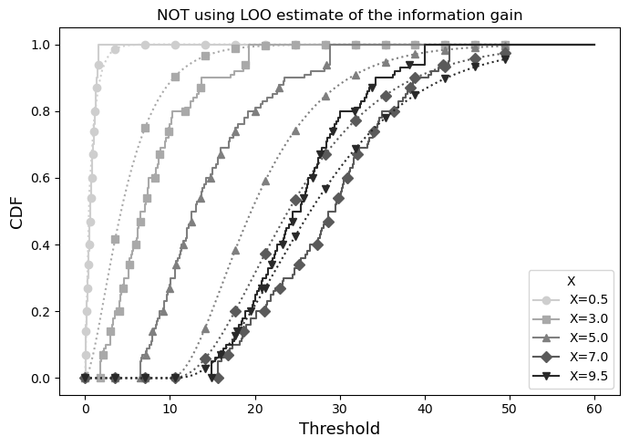
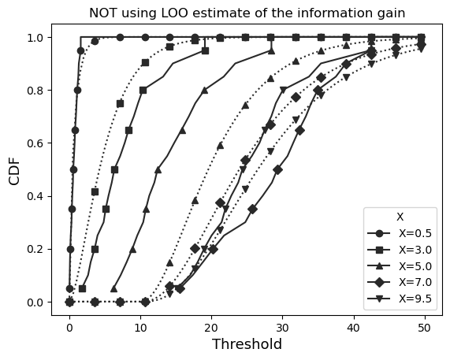
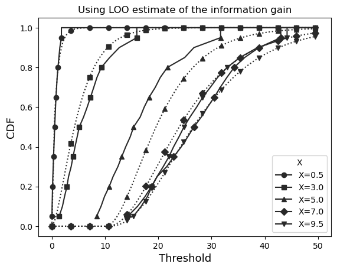

Reproducing results of the paper: Leave One Out#
This notebook contains the scripts used to reproduce the results from our paper on the Leave-One-Out estimate of information gains.
[ ]:
import numpy as np
np.random.seed(1)
import os
import sys
import matplotlib.pyplot as plt
# Get the directory where the current notebook is located
NOTEBOOK_DIR = os.getcwd()
# Go up two levels (adjust the '..' count as needed)
REPO_ROOT = os.path.abspath(os.path.join(NOTEBOOK_DIR, '../../../../'))
# Add to sys.path if not already there
if REPO_ROOT not in sys.path:
sys.path.insert(0, REPO_ROOT)
from DisTreebution.UQ.UQ import UQ
import matplotlib
1. Qualitative evaluation of Leave One Out#
a. Data generation#
[6]:
def get_data(mode='smooth', n=100, seed=10):
np.random.seed(seed)
X = np.random.uniform(0, 10, n)
a = X*(X>1)+(X<=1)
scale = (a<6)*a+6*(a>=6)
y = np.random.gamma(np.sqrt(X), scale=scale)
if mode=='smooth':
return X.reshape(-1,1), y
elif mode=='discontinuous':
return X.reshape(-1,1), (y+10*(X>=5))
elif mode=='non-isotonic':
return X.reshape(-1,1), ((y-2*(X>=7)))
elif mode=='discrete':
return X.reshape(-1,1), np.random.poisson(scale, size=n)
from scipy.stats import gamma, poisson
def get_cdf(x_i, vals, mode='smooth'):
a = x_i*(x_i>1)+(x_i<=1)
scale = (a<6)*a+6*(a>=6)
gdcf = gamma.cdf(vals, np.sqrt(x_i), scale=scale)
if mode=='smooth':
return gdcf
elif mode=='discontinuous':
if x_i<5:
return gdcf
else:
return gamma.cdf(vals-10, np.sqrt(x_i), scale=scale)
elif mode=='non-isotonic':
if x_i<7:
return gdcf
else:
return gamma.cdf(vals+2, np.sqrt(x_i), scale=scale)
elif mode=='discrete':
return poisson.cdf(vals, scale)
mode = 'discontinuous'
X, y = get_data(mode=mode, n=600, seed=20)
b. CRPS results#
[7]:
ls_q = [0.01*(i+1) for i in range(99)]
markers = ['o', 's', '^', 'D', 'v'] # distinct markers for each x_test
styles = ['-', '--', ':', '-.', (0, (3, 10, 1, 10))]
for use_LOO in [False, True]:
params = {'use_LOO':use_LOO, 'nTrees':100, 'max_depth':10, 'min_samples_split':10}
model = UQ(type_tree='CRPS', type_conformal=None, params=params)
treesCRPSRT, _ = model.train_trees(X.reshape(-1,1), y)
x_test = np.array([0.5, 3, 5, 7, 9.5]).reshape(-1,1)
resCRPSRT = model.get_quantile_estimate(treesCRPSRT, x_test, ls_q)
plt.figure(figsize=(7,5))
# Use a sequential gray colormap
cmap = matplotlib.cm.get_cmap('Greys')
for i, x_i in enumerate(x_test[:,0]):
ls_x = []
ls_y = []
for i_q, q in enumerate(ls_q[:-1]):
ls_x += [resCRPSRT[i][i_q], resCRPSRT[i][i_q], resCRPSRT[i][i_q+1]]
if i_q==0:
ls_y += [0, q, q]
else:
ls_y += [ls_q[i_q-1], q, q]
ls_x.append(resCRPSRT[i][len(ls_q)-1])
ls_y.append(1)
ls_x.append(60)
ls_y.append(1)
color = cmap(0.3 + 0.7 * i / x_test.shape[0]) # shades of gray
plt.plot(ls_x, ls_y, color=color, linestyle='-', marker=markers[i % len(markers)],
markevery=20, markersize=6, label=f'X={x_i}')
# Theoretical CDF as dotted line with same shade
vals = np.linspace(0,50,100)
plt.plot(vals, get_cdf(x_i, vals, mode=mode), color=color, marker=markers[i % len(markers)], markevery=7, linestyle=':')
plt.legend(title='X', fontsize=10)
plt.xlabel('Threshold', fontsize=13)
plt.ylabel('CDF', fontsize=13)
if use_LOO:
plt.title('Using LOO estimate of the information gain')
else:
plt.title('NOT using LOO estimate of the information gain')
plt.tight_layout()
plt.show()
100%|██████████| 100/100 [00:16<00:00, 6.21it/s]
/tmp/ipykernel_96586/1199278252.py:17: MatplotlibDeprecationWarning: The get_cmap function was deprecated in Matplotlib 3.7 and will be removed two minor releases later. Use ``matplotlib.colormaps[name]`` or ``matplotlib.colormaps.get_cmap(obj)`` instead.
cmap = matplotlib.cm.get_cmap('Greys')

100%|██████████| 100/100 [00:10<00:00, 9.69it/s]

c. PMQRTs results#
[8]:
ls_q = [0.05*(i+1) for i in range(19)]
for use_LOO in [False, True]:
params = {'use_LOO':use_LOO, 'nTrees':100, 'max_depth':7, 'min_samples_split':10, 'treeID2quantiles_train':{ID : ls_q for ID in range(100)}}
model = UQ(type_tree='PMQRT', type_conformal=None, params=params)
treesPQRT, _ = model.train_trees(X.reshape(-1,1), y)
x_test = np.array([0.5, 3, 5, 7, 9.5]).reshape(-1,1)
resPQRT = model.get_quantile_estimate(treesPQRT, x_test, ls_q)
import matplotlib
cmap = matplotlib.cm.get_cmap('winter')
for i, x_i in enumerate(x_test[:,0]):
ls = []
ls_x = []
ls_y = []
for i_q, q in enumerate(ls_q):
ls_x += [resPQRT[i][i_q]]
if i_q==0:
ls_y.append(q)
else:
ls_y.append(q)
#plt.scatter(ls_x, ls_y, color=cmap(i/x_test.shape[0]))
ls_x.append(resPQRT[i][len(ls_q)-1])
ls_y.append(1)
ls_x.append(50)
ls_y.append(1)
plt.plot(ls_x, ls_y, color=color, linestyle='-', marker=markers[i % len(markers)],
markevery=3, markersize=6, label=f'X={x_i}')
vals = np.linspace(0,50,100)
plt.plot(vals, get_cdf(x_i, vals, mode=mode), color=color, marker=markers[i % len(markers)], markevery=7, linestyle=':')
#plt.plot(vals, get_cdf(x_i, vals, mode=mode), color=cmap(i/x_test.shape[0]), linestyle='--', label=str(x_i))
plt.legend(title='X')
plt.xlabel('Threshold', fontsize=13)
plt.ylabel('CDF', fontsize=13)
if use_LOO:
plt.title('Using LOO estimate of the information gain')
else:
plt.title('NOT using LOO estimate of the information gain')
plt.show()
100%|██████████| 100/100 [01:26<00:00, 1.16it/s]
/tmp/ipykernel_96586/88155509.py:11: MatplotlibDeprecationWarning: The get_cmap function was deprecated in Matplotlib 3.7 and will be removed two minor releases later. Use ``matplotlib.colormaps[name]`` or ``matplotlib.colormaps.get_cmap(obj)`` instead.
cmap = matplotlib.cm.get_cmap('winter')

100%|██████████| 100/100 [01:28<00:00, 1.13it/s]

2. Quantitative evaluation of Leave One Out#
This section presents the results of experiments conducted on various datasets to quatify the effect of using Leave One Out (LOO) estimates of information gain in the training CRPS-RF when considering different values of standard stopping criteria.
[ ]:
max_depths = [i for i in range(1,14)]
min_samples_splits = [5*(i+1) for i in range(10)]
noLOO = {"width": np.zeros((len(max_depths), len(min_samples_splits))), "coverage": np.zeros((len(max_depths), len(min_samples_splits)))}
LOO = {"width": np.zeros((len(max_depths), len(min_samples_splits))), "coverage": np.zeros((len(max_depths), len(min_samples_splits)))}
seed = 0
x_test, y_test = get_data(mode=mode, n=1000, seed=0)
alpha = 0.1
from tqdm import tqdm
for idxdepth, max_depth in tqdm(enumerate(max_depths)):
for idxsplit, min_samples_split in enumerate(min_samples_splits):
for useLOO in [False,True]:
params = {'use_LOO':useLOO, 'nTrees':100, 'max_depth':max_depth, 'min_samples_split':min_samples_split}
model = UQ(type_tree='CRPS', type_conformal=None, params=params)
treesCRPSRT, _ = model.train_trees(X.reshape(-1,1), y)
resCRPSRT = model.get_quantile_estimate(treesCRPSRT, x_test, [alpha/2, 1-alpha/2])
widths, coverages = model.compute_width_coverage(resCRPSRT, y_test)
if useLOO:
LOO["width"][idxdepth,idxsplit] = np.mean(widths)
LOO["coverage"][idxdepth,idxsplit] = np.mean(coverages)
else:
noLOO["width"][idxdepth,idxsplit] = np.mean(widths)
noLOO["coverage"][idxdepth,idxsplit] = np.mean(coverages)
[ ]:
def write_latex_table(metric_name, noLOO_data, LOO_data, max_depths, min_samples_splits, filename=None):
"""
Generate a LaTeX table comparing no-LOO vs LOO for a given metric (width or coverage).
Rows = max_depth, Columns = min_samples_split.
"""
min_samples_splits = min_samples_splits[:-5]
table = []
table.append("\\begin{table}[h!]")
table.append("\\centering")
table.append(f"\\caption{{Comparison of {metric_name} between LOO and no LOO across max depth and min samples split}}")
table.append("\\scriptsize")
table.append("\\setlength{\\tabcolsep}{3pt}")
table.append("\\renewcommand{\\arraystretch}{1.1}")
# Header row
header = " & " + " & ".join([f"\\multicolumn{{2}}{{c|}}{{{mss}}}" for mss in min_samples_splits]) + " \\\\"
table.append("\\begin{tabular}{|c|" + "c|c|" * len(min_samples_splits) + "}")
table.append("\\hline")
table.append("\\multirow{2}{*}{max depth} & " + " & ".join([f"\\multicolumn{{2}}{{c|}}{{min\\_samples={mss}}}" for mss in min_samples_splits]) + " \\\\")
table.append("\\cline{2-" + str(2*len(min_samples_splits)+1) + "}")
table.append(" & " + " & ".join(["no LOO & LOO" for _ in min_samples_splits]) + " \\\\")
table.append("\\hline")
# Data rows
for i, depth in enumerate(max_depths):
row = [str(depth)]
for j in range(len(min_samples_splits)):
val_noLOO = noLOO_data[i, j]
val_LOO = LOO_data[i, j]
row.append(f"{val_noLOO:.3f} & {val_LOO:.3f}")
table.append(" & ".join(row) + " \\\\")
table.append("\\hline")
table.append("\\end{tabular}")
table.append("\\end{table}")
latex_code = "\n".join(table)
if filename:
with open(filename, "w") as f:
f.write(latex_code)
return latex_code
# Example usage:
latex_width = write_latex_table("mean width", noLOO["width"], LOO["width"], max_depths, min_samples_splits)
latex_coverage = write_latex_table("mean coverage", noLOO["coverage"], LOO["coverage"], max_depths, min_samples_splits)
# Print the LaTeX tables
print(latex_width)
print("\n" + "="*80 + "\n")
print(latex_coverage)